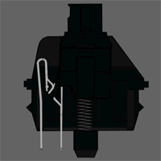
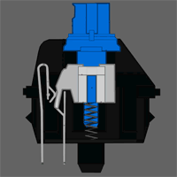

MX Switch Types

Cherry MX Black is a linear switch. It is very smooth and snappy.

Cherry MX Brown is a tactile switch. It offers light feedback.

Cherry MX Blue is a clicky switch. It makes a click sound.